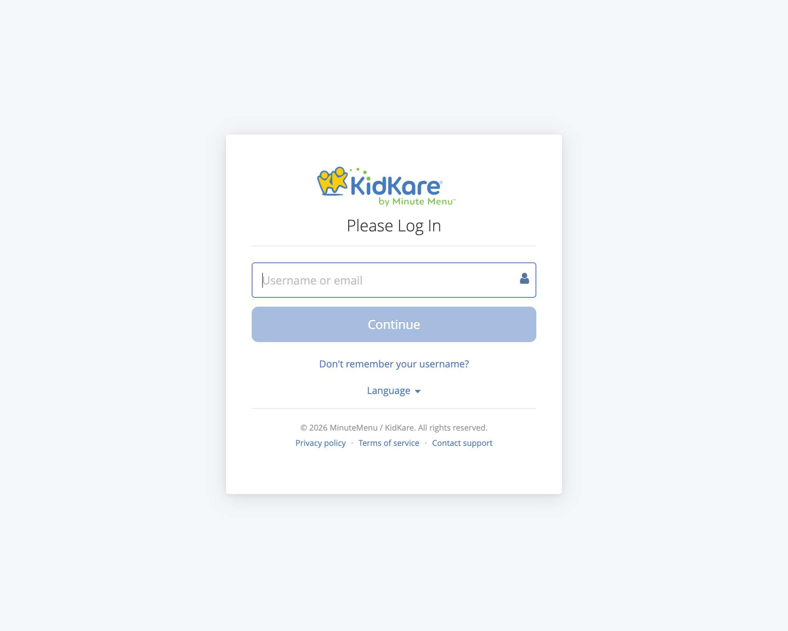

Authentication Overview
MinuteMenu uses three authentication mechanisms. Each serves a different purpose.
graph TB
subgraph "User Authentication"
UP["Username + Password<br/>(all products)"]
SAML["SAML SSO<br/>(CX sponsors via Azure AD)"]
end
subgraph "Service Authentication"
S2S["Basic Auth / API Keys<br/>(between services)"]
end
UP --> SSO[SingleSignOn Service]
SAML --> SSO
SSO --> Redis[(Redis<br/>Shared Sessions)]
S2S --> HX_API[HX Cloud API]
S2S --> KK_API[KK API]
Redis --> KK[KidKare]
Redis --> CX[Centers-CX]
Redis --> PAR[Parachute]1. Username + Password (Standard Login)
The default authentication method. All products use it.

KidKare uses an identifier-first login. The user enters their username or email first, then the system determines whether to show a password field (standard) or redirect to a corporate IdP (SAML SSO).
How it works:
- User enters username and password on login page
- KK sends credentials to SingleSignOn Service (
POST /auth) - SSO validates against its MySQL user database (salted hash)
- If user doesn't exist in SSO but exists in HX or CX → account is created on the fly (JIT provisioning)
- Session is stored in Redis, shared across all products
- Session ID returned via cookie (
ss-idheader for SPA clients)
Session details:
- Stored in Redis with 12-hour TTL
- Shared across KK, CX, Parachute (same Redis instance)
- Contains: user ID, roles, permissions, site data
Repos involved: KK (login UI + login types), SingleSignOn-Service (credential validation + session creation)
2. SAML SSO (Federated Login)
Added for CX (Center) sponsors who want their users to log in with corporate credentials via Microsoft Entra ID (Azure AD). Controlled by Policy A.13 per sponsor.
How it works (simplified):
- User enters email on login page
- System checks if the email domain is SSO-enabled (Home Realm Discovery)
- If yes → redirect to corporate identity provider (Azure AD)
- User authenticates at Azure AD
- Azure sends SAML assertion back to SSO service
- SSO validates assertion, creates a one-time exchange token
- Redirects back to KK, which uses the token to create a normal session
Key characteristics:
- Authentication only — user accounts and permissions still managed in KidKare
- Policy-gated: each sponsor can enable/disable independently
- Currently supports CX Sponsor and Center users only
- SAML users have no KidKare password — they always log in via their IdP
Repos involved: KK (identifier-first UI, SAML BLL), SingleSignOn-Service (SAML callback, exchange token), MinuteMenu.Database (IdP config tables in CXADMIN)
See SAML SSO Architecture for the full technical flow.
3. Service-to-Service Authentication
Backend services authenticate with each other using Basic Auth or API keys. This is not user-facing but is critical for the Entra ID migration — every call site below depends on the current credential system.
How it works
Most service-to-service calls pass the user's BasicAuthHeader from their session. When a user logs in, their credential is stored in the Redis session. Every outbound call to another service re-uses that credential. A few services use hardcoded service accounts from app config instead.
graph LR
subgraph "User Session (Redis)"
BAH["BasicAuthHeader<br/>base64(user:password)"]
end
subgraph "KK Outbound"
KK_RPT["KK → Report Engine"]
KK_CX["KK → CX API"]
KK_HOMES["KK → Homes API"]
KK_PAR["KK → Parachute API"]
end
subgraph "Other Outbound"
PAR_KK["Parachute → KK API"]
CX_KK["Centers-CX → KK API"]
HX_DCP["HX Cloud → DCP API"]
HX_KK["HX Cloud → KK API"]
end
BAH --> KK_RPT
BAH --> KK_CX
BAH --> KK_HOMES
BAH --> KK_PAR
BAH --> PAR_KK
BAH --> CX_KK
CFG["Service Account<br/>(app config)"] --> HX_DCP
RAW["RAW_PASSWORD table"] --> HX_KKComplete Inventory
KK → Reporting Service (Basic Auth from user session)
The reporting service is the largest consumer of Basic Auth. Every report call passes the user's session credentials.
| Caller Class | Repo | What it does |
|---|---|---|
ReportController (~20 methods) |
KK | PDF generation for homes, centers, sponsors — verify in/out times, payment details, child reports |
ReportService |
KK | ServiceStack report endpoints (legacy) |
CenterAccountingReportBll |
KK | Center accounting and financial reports |
CommonReportEnrollmentBll |
KK | Enrollment and income eligibility reports |
ProviderAccountingReportBll |
KK | Provider accounting and invoice reports |
ParachuteReportController |
KK | Parachute-specific reports |
SponsorController |
KK | Sponsor report operations |
MessageController |
KK | Message-related report operations |
AccountingReportService |
Parachute | FormW10 reports |
KK → CX API (Basic Auth from session or CX DB)
| Caller Class | Repo | What it does |
|---|---|---|
CentersClient |
KK | Attendance quantities, CX data operations |
CxIntegrationBll |
KK | FRP calculations, CX integration endpoints |
Credentials come from the user session first. If unavailable, falls back to CX user password from CXADMIN database.
KK → Homes API (Basic Auth from user session)
| Caller Class | Repo | What it does |
|---|---|---|
ReportController |
KK | Report data retrieval (ChildInOutTimes, PaymentDetails, etc.) |
KK → Parachute API (Basic Auth from user session)
| Caller Class | Repo | What it does |
|---|---|---|
ParachuteServiceRestClient (factory) |
KK | Multiple endpoints via HttpClient |
Parachute → KK API (Basic Auth from user session)
| Caller Class | Repo | What it does |
|---|---|---|
KidKareIntegrationBll (6 methods) |
Parachute | Cancel/reactivate fraud subscriptions, Zoho queries, coupon management |
KKServiceRestClient (factory, used by 12+ classes) |
Parachute | Attendance, Settings, UserReader, AccountingHelper, Notifications, ProviderHomeScreen, and more |
Centers-CX → KK API (Basic Auth)
| Caller Class | Repo | What it does |
|---|---|---|
EnrollmentsClient |
Centers-CX | Online enrollment counts by center/client |
ManageFoodClient |
Centers-CX | Food list auth links |
ManageArassfspClient (2 methods) |
Centers-CX | Claim and attendance management links |
RenewEnrollments |
Centers-CX | Completed online enrollments data |
IEFService |
Centers-CX | Income eligibility renewals |
Features |
Centers-CX | Online enrollment status, self-auth links |
Note: CX has a SSO decision gate — Login.GetAzureComponent().IsAllowSupportOldSSO() switches between username:password and username:idToken. This is early migration scaffolding.
HX Cloud API → DCP (Hardcoded service credentials)
| Caller Class | Repo | What it does |
|---|---|---|
DcpService (4 methods) |
hx_cloudconnectionAPI | Submit/analyze claims, get processing status. Uses username/password from DcpOptionConfig. |
HX Cloud API → KK (Basic Auth from RAW_PASSWORD table)
| Caller Class | Repo | What it does |
|---|---|---|
KKIntegration |
hx_cloudconnectionAPI | Callbacks to KK. Looks up raw password from RAW_PASSWORD table in DB. |
Inbound Basic Auth (services that validate incoming Basic Auth)
| Service | Repo | What it does |
|---|---|---|
AuthAttribute |
KK | Validates incoming requests — supports both session and Basic Auth header |
BasicAuthenticationFilterAttribute on ClaimsProcessingController |
DistributedProcessing | Validates incoming claims processing requests against configured service credentials |
API Key / Other Auth
| Route | Method | How |
|---|---|---|
| External → HX Cloud API | mm-api-key header (GUID) |
Validated against KK_API_KEY table, exchanged for JWT |
| External → HX Cloud API | x-api-key header (encrypted) |
Decrypted and validated, limited to specific endpoints |
| SSO → Azure APIM | SAS token (HMAC-SHA512) | Shared Access Signature for APIM management API |
| KK → Zoho | OAuth token | Zoho-oauthtoken header with refresh flow |
| KK → Stripe | Bearer token | Stripe API key as bearer |
| KK → Chat API | Bearer token | User token for chat/messaging |
| KK → ChargeBee | Basic Auth (API key) | ChargeBee API key encoded as Basic Auth |
How They Connect
All three mechanisms ultimately produce the same result: a session in Redis that all products can read.
Username/Password ──► SSO validates ──► Redis session ──► KK, CX, Parachute
SAML SSO ──────────► SSO validates ──► Redis session ──► KK, CX, Parachute
Service-to-Service ► Direct auth ────► Request-scoped (no shared session)
| Mechanism | Who uses it | Session shared? | Password in KidKare? |
|---|---|---|---|
| Username + Password | All users | Yes (Redis) | Yes |
| SAML SSO | CX sponsors with Policy A.13 | Yes (Redis) | No — uses corporate IdP |
| Basic Auth / API Key | Backend services | No — per-request | N/A |
Impact on Entra ID Migration
When migrating from MySQL-based auth to Azure Entra ID, every Basic Auth call site above needs to be addressed. Key considerations:
| Category | Call Sites | Migration Impact |
|---|---|---|
| Session-based Basic Auth (user credential passthrough) | ~30+ across KK, Parachute, CX | All depend on BasicAuthHeader stored in Redis session. If credentials change format (e.g., to tokens), every consumer breaks. |
| Reporting Service | ~20 methods in KK alone | Largest single consumer. All use UserSessionState.GetBasicAuthHeader(). |
| Hardcoded service credentials | Rate Limiter, DCP Service | Independent of user auth — can migrate separately. |
| RAW_PASSWORD table | HX Cloud → KK callbacks | Stores plain passwords for Basic Auth encoding. Must be replaced. |
| CX SSO decision gate | 6 clients in Centers-CX | Already has IsAllowSupportOldSSO() toggle — migration scaffolding exists. |
Central points of change:
UserSessionState.GetBasicAuthHeader()— used by all session-based callsServiceClientExtension.UseBasicAuth()— extension method on all ServiceStack clientsEncryptionHelper.EncodeBasicAuthToken()/DecodeBasicAuthToken()— encoding/decoding utilityKKServiceRestClientfactory in Parachute — factory for all Parachute → KK calls